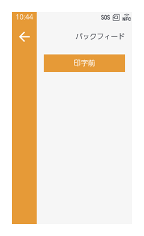
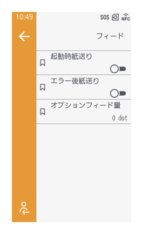

用紙送りの設定・調整
バックフィードのタイミングを設定する
［印字］ > ［バックフィード］

バックフィード動作のタイミングを設定します。
［動作モード］を［ハクリ］または［カッタ］に設定している場合に変更できます。
［なし］
バックフィードされません。印字後の用紙はサーマルヘッドの位置に停止します。［印字後］
［動作モード］が［カッタ］の場合、用紙をカット後に次の用紙の先端がサーマルヘッドの位置までバックフィードされます。［動作モード］が［ハクリ］の場合、ラベルをハクリ後、次のラベルの先端までバックフィードされます。［印字前］
印字前に、次の用紙の先端がサーマルヘッドの位置までバックフィードされます。

- ［動作モード］が［連続発行］の場合は、［なし］に固定されます。
- ［動作モード］が［ティアオフ］の場合は、［印字前］に固定されます。
- CL4-SXR ［動作モード］が［ノンセパカッタ］の場合は、［印字前］に固定されます。
- ［動作モード］が［印字中カット］の場合は、［印字後］に固定されます。
* 初期値は、動作モードにより異なります。
［連続発行］：［なし］
［ティアオフ］、［ノンセパカッタ］：［印字前］
［ハクリ］、［カッタ］、［印字中カット］：［印字後］
用紙送りのタイミングと量を設定する
［印字］ > ［詳細設定］ > ［フィード］

［起動時紙送り］
本製品起動時に自動で用紙送りをおこなうかを設定します。
［用紙無駄なし］が無効の場合に設定できます。
本機能が無効で、かつ［ラベル自動測長］が有効の場合は、電源を入れてはじめてオンライン状態に切替わるときに、用紙送りをおこないます。
初期値：無効
［エラー後紙送り］
エラーから復帰してオンライン状態に切替わるときに、自動で用紙送りをおこなうかを設定します。
［用紙無駄なし］が無効の場合に設定できます。
本機能が無効で、かつ［起動時紙送り］が有効の場合は、電源を入れてオンライン状態に切替わるときに、用紙送りをおこないます。
また、［ラベル自動測長］が有効の場合、本製品の電源を入れてはじめてオンライン状態に切替わるときに、用紙送りをおこないます。
初期値：無効
［オプションフィード量］
ティアオフ、カット、ハクリ停止時の用紙送り量を設定します。サーマルヘッドの位置を0として、用紙送り量を設定します。
実際の用紙送り量は、［オフセット調整］の値と［オプションフィード量］の値の合計です。
CL4-SXR
- 203dpi：0～2040dot
- 305dpi：0～3060dot
- 609dpi：0～6120dot
CL6-SXR
0～2040dot